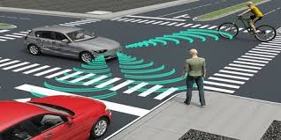
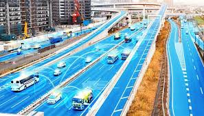

Introduction
What are autonomous vehicles?
Autonomous vehicles can be generally described as vehicles capable of sensing their environment with little or no human intervention. The idea of autonomous vehicles date back to 1939 where Norman Ben Geddes created the first autonomous car. It was an electric vehicle guided by radio-controlled electromagnetic fields generated with magnetized metal spikes embedded in the roadway. Today, the concept of autonomous vehicles have become a bit more complicated or complex in nature.


How are autonomous vehicles useful? What are the advantages?
- * Reduction in the number of accidents
- Accidents are often caused by human errors and vehicular errors. Autonomous vehicles can limit human errors and substantially decrease the number of accidents caused by human error.
- * Reduced travel time and costs
- Autonomous vehicles effectively reduce traffic congestion caused by many several factors. This promotes better transportation which reduces travel time and in turn reduces travel costs.
- * Increased fuel efficiency
- Frequent acceleration and deceleration can cause bad fuel economy which can be overcome by employing the technology of autonomous vehicles.
Autonomous vehicles can be broken down into five levels based on the level of capability of the vehicle to operate independently. They can be listed as:
- Level 1: Driver Assistance
- Level 2: Partial Automation
- Level 3: Conditional Automation
- Level 4: High Automation
- Level 5: Full Automation